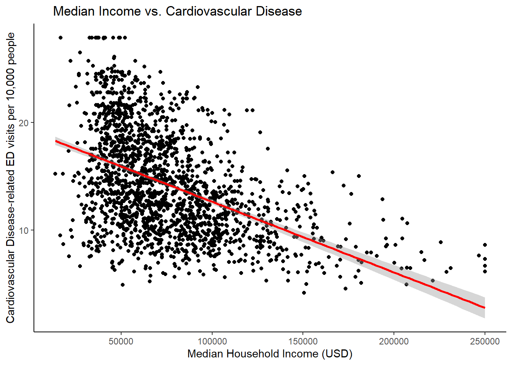
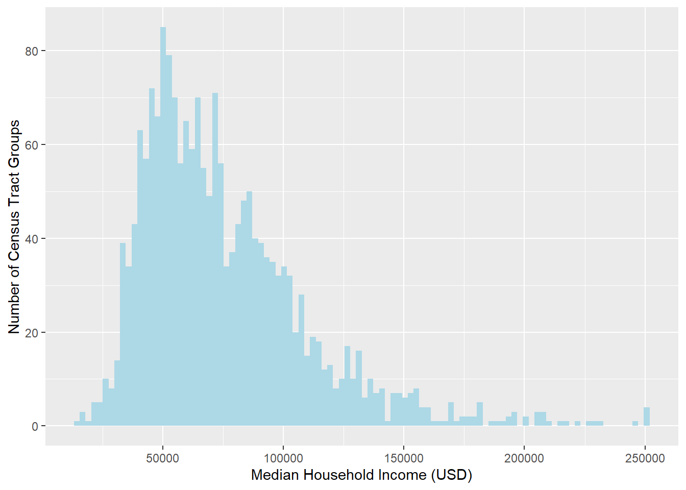

# loading in needed libraries
library(tidyverse)
library(dplyr)
library(ggplot2)
library(stats)
library(lubridate)
library(janitor)
library(sf)Water Quality and Socioeconomic Status In LA County
Does Household Income Have an Affect on Cardiovascular Health in LA County?
Introduction and Significance
Methods
# reading in the data
income_la <- read_csv('./data/Median_Income_and_AMI_(census_tract).csv') %>%
rename('census_tract' = 'tract')
# reading in water la data
los_angeles <- read_csv('data/cal_enviro_4.csv') %>%
clean_names() %>%
filter(california_county == 'Los Angeles')
# joining in the two datasets
income_water_la <- left_join(los_angeles, income_la, by = "census_tract") %>%
na.omit()
# preliminary plotting
lm(drinking_water ~ med_hh_income, data = income_water_la)
Call:
lm(formula = drinking_water ~ med_hh_income, data = income_water_la)
Coefficients:
(Intercept) med_hh_income
6.710e+02 -7.828e-04 summary(income_water_la$med_hh_income) Min. 1st Qu. Median Mean 3rd Qu. Max.
13630 50469 67548 75373 92008 250001 # need units for drinking_water
# sum of percentiles for drinking water index (includes lead, arsenic, TCM, Perchlorate)
####**** Ideas : either stick with drinking water column (units unclear) or cardiovascular disease #######
ggplot(income_water_la, aes(x = med_hh_income, y = cardiovascular_disease))+
geom_point()+
stat_smooth(method = 'lm', col = 'red')+
labs(x = 'Median Household Income (USD)',
y = 'Cardiovascular Disease-related ED visits per 10,000 people',
title = ' Median Income vs. Cardiovascular Disease')+
theme_classic()
ggplot(data = income_water_la, aes(x = med_hh_income))+
geom_histogram(bins = 100, fill = 'lightblue')+
labs(x = 'Median Household Income (USD)',
y = 'Number of Census Tract Groups')
## hypothesis test construction
# summary statistics for cardiovascular disease related ed visits
cardio_stats <- income_water_la %>%
group_by(ami_category) %>%
summarise(mean = mean(cardiovascular_disease),
sd = sd(cardiovascular_disease))
print(cardio_stats)# A tibble: 5 × 3
ami_category mean sd
<chr> <dbl> <dbl>
1 Above Moderate Income 10.8 3.20
2 Extremely Low Income 15.6 5.49
3 Low Income 13.9 4.05
4 Moderate Income 11.8 3.56
5 Very Low Income 16.8 4.81# constructing hypotheses\[H_{0}: \mu_{cardiodiseaseinExtrLowInc} - \mu_{cardiodiseaseinModInc} = 0\] \[H_{A}: \mu_{cardiodiseaseinExtrLowInc} - \mu_{cardiodiseaseinModInc} \neq 0\]
\[SE = \sqrt{\frac{s_1^2}{n_1} + \frac{s^2_2}{n_2}}\]
# computing a point estimate for both groups
mu_cardio_low <- income_water_la %>%
filter(ami_category == 'Extremely Low Income') %>%
summarize(mean(cardiovascular_disease))
mu_cardio_mod <- income_water_la %>%
filter(ami_category == 'Above Moderate Income') %>%
summarize(mean(cardiovascular_disease))
point_est_cardio <- as.numeric(mu_cardio_mod - mu_cardio_low) # will use for z-score
# computing standard error
n1 <- income_water_la %>%
filter(ami_category == 'Extremely Low Income') %>%
count()
n2 <- income_water_la %>%
filter(ami_category == 'Above Moderate Income') %>%
count()
s1 <- income_water_la %>%
filter(ami_category == 'Extremely Low Income') %>%
summarize(sd(cardiovascular_disease, na.rm = TRUE))
s2<- income_water_la %>%
filter(ami_category == 'Above Moderate Income') %>%
summarize(sd(cardiovascular_disease, na.rm = TRUE))
# computing standard error
standard_error <-as.numeric(sqrt(s1^2/n1 + s2^2/n2))